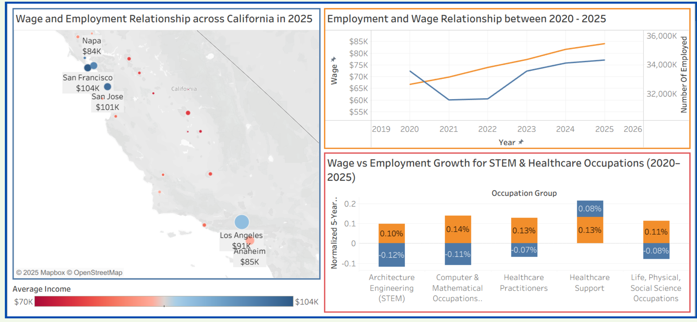
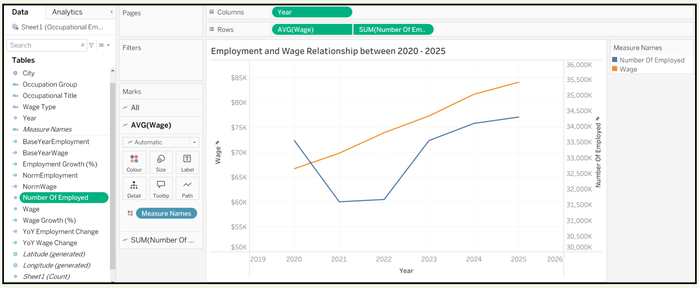
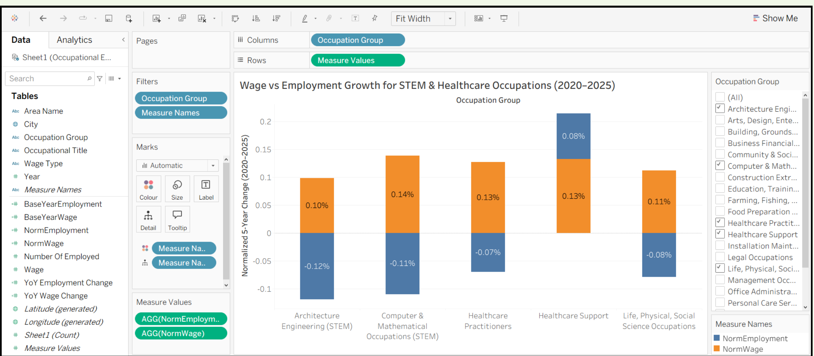
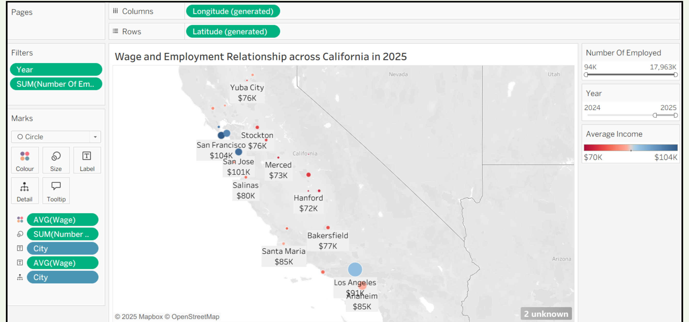

Using Tableau to explore how employment demand, wage growth, occupation type, and geography interact across California.
Graduate Data Visualization Project
California State University, East Bay · 2025
Do high-growth occupations experience corresponding wage increases between 2020 and 2025?
The project examined employment and wage trends across California occupation groups and geographic markets, using the Occupational Employment and Wage Statistics dataset.
Occupational Employment & Wage Statistics (OEWS)
2020–2025
22 occupation groups across California
FINAL DASHBOARD
The final Tableau dashboard brings together occupational, geographic, employment, and wage analyses into a single interactive view.

The analysis began by establishing 2020 as a baseline year for employment and wages. Calculated fields were then created in Tableau to measure normalized changes relative to that baseline.
Created fixed 2020 employment and wage values for each occupation group.
Converted employment and wage differences into proportional changes so occupation groups could be compared on the same scale.
Built Tableau visualizations using trend lines, normalized comparisons, highlighting, and geographic mapping.
Two calculated fields established the 2020 baseline for each occupation group. Additional normalized measures converted the five-year changes into comparable percentages.
The Tableau calculations use a FIXED expression by occupation group and return the average employment or wage value for 2020.
The normalized measures compare the current value against the 2020 base year and express the result as a relative change.
Employment & Wage Relationship, 2020–2025
A dual-axis Tableau line chart was used to compare employment and wage trends over time. Employment and wage measures were placed on synchronized axes and filtered to the 2020–2025 period.

Employment and wage movements did not behave uniformly throughout the period. The 2020–2022 period showed substantial volatility, while several occupations displayed a more consistent relationship after 2022.
Wage vs. Employment Growth Across Occupations
Normalized employment and wage changes were compared across selected STEM and healthcare occupation groups. A zero reference line made it easier to distinguish growth from decline.

Occupation groups differ significantly in their absolute employment and wage levels. Normalization allowed the project to compare the direction and magnitude of change rather than simply comparing raw values.
California Geographic Analysis
A geographic Tableau visualization mapped California locations using wage and employment measures. Wage was represented through color while employment influenced the size of the geographic marks.

The geographic view made regional differences in employment and wage levels easier to identify and compare.
Many occupation groups did not demonstrate parallel growth in employment and wages during 2020–2025.
Several occupations showed a more positive employment-and-wage relationship during 2023–2025.
Within the selected STEM and healthcare groups, Healthcare Support showed both rising normalized employment and rising normalized wages.
Several occupation groups showed wage growth even where employment declined, challenging the assumption that increasing demand automatically produces higher wages.
The analysis suggested that workforce planning should consider both employment and wage trends rather than assuming that demand alone determines compensation.
Focus resources on occupations where both employment and wages are increasing.
Consider targeted upskilling and role redesign where wages rise while employment declines.
Use multiple labor-market indicators when making hiring and compensation decisions.
View the original presentation and supporting project materials for the complete analysis.
View Project Materials